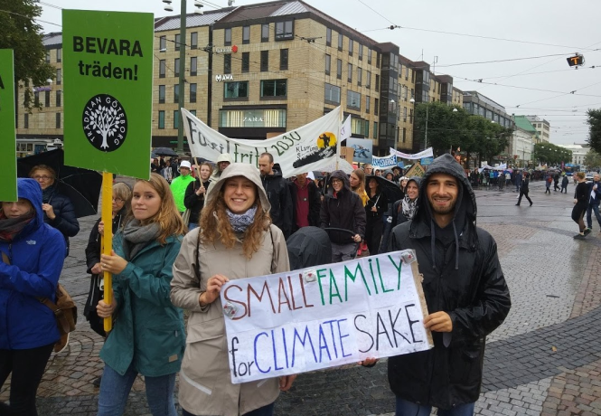
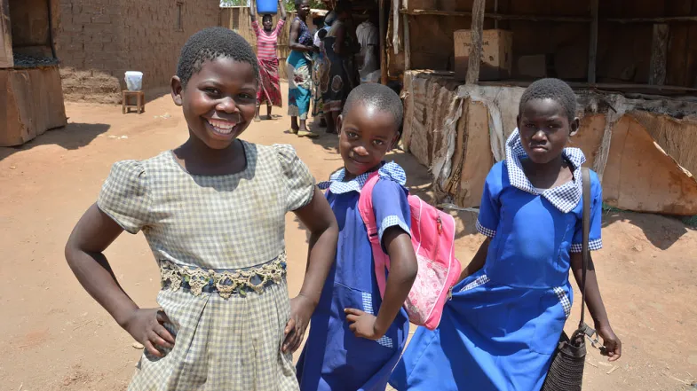

Solutions
Although many environmental trends are grim, there exist clear paths forward toward a more sustainable world: one where people steward resources for the future and share habitat and resources generously with other species. Obviously, no one person or organization can cover all the efforts suggested below. But each of us can do something and together we can create a sustainable world.
Actions on the individual level
Have fewer children, and have them later! One is good, two is enough.
-
Consider adoption!
Read, educate yourself about population issues
Read, educate yourself about population issues
Reduce your personal consumption: go vegan, limit flying, share your household with others.
Read, educate yourself about population issues
Educate your teenage child(ren) about sex and contraception early, without taboos
Read, educate yourself about population issues
Spread your knowledge and concern among your friends and family, raise awareness about overpopulation on social media
Read, educate yourself about population issues
Donate to family planning programs in your own or other countries – for example to International Planned Parenthood, FP2020 or another equally deserving organization
Read, educate yourself about population issues
Vote for politicians who acknowledge the detrimental impacts of population growth and propose political solutions
 Actions on the community level
Join local environmental groups, encouraging them to “connect the dots” between population and the environment and address population issues
-
Write opinion pieces for local newspapers, contact local media sources requesting more reporting on population issues – create demand!
-
Municipalities should set growth management boundaries, discouraging sprawl development on their fringes
Municipalities should set growth management boundaries, discouraging sprawl development on their fringes
-
Towns and cities should purchase surrounding lands, or the development rights to such lands, in order to set them aside as nature preserves and open space
-
Towns and cities should purchase surrounding lands, or the development rights to such lands, in order to set them aside as nature preserves and open space
Towns and cities should purchase surrounding lands, or the development rights to such lands, in order to set them aside as nature preserves and open space
-
Towns and cities should purchase surrounding lands, or the development rights to such lands, in order to set them aside as nature preserves and open space
Towns and cities should purchase surrounding lands, or the development rights to such lands, in order to set them aside as nature preserves and open space
Towns and cities should purchase surrounding lands, or the development rights to such lands, in order to set them aside as nature preserves and open space
-
In high fertility countries, governments should…
 -
Generously fund family planning programs, read about good examples school girls
-
In low fertility countries, governments should…
-
Embrace rather than fight aging and shrinking societies
-
Embrace rather than fight aging and shrinking societies
-
Reorganize pensions and other socio-economic systems to accommodate aging societies
-
Reorganize pensions and other socio-economic systems to accommodate aging societies
-
Eliminate baby bonuses, government funding for fertility treatments, and other incentives to raise fertility rates
-
Reduce immigration numbers (at least to a level that will stabilize national populations, preferably to one that will lower them)
-
Reduce resource consumption and pollution through an effective mix of taxes, incentives and regulations
small familyIn every country, governments should
-
Empower women, assuring equal rights, treatment and opportunities for both genders
Provide information and access to reproductive health care, including all types of low cost, safe, effective contraception
Make sterilization free, for men and women, or at least covered under all healthcare plans
Legalize abortion without restrictions or social stigma
Integrate family planning and safe motherhood programs into primary health care systems
Make population and environmental issues and sex education part of the basic educational curriculum
Disincentivize third and further children non-coercively, by limiting government support to the first two children
Create a national population policy built around an optimal population size, and work to achieve it
Set aside half the national landscape free from intensive development and dedicated to biodiversity protection
Actions on the global level
Make “ending population growth” one of the UN Sustainable Development Goals
-
Greatly increase the amount of foreign aid going to family planning
Change the current foreign aid distribution, giving more support for health and education, while ending international military aid
Global religious leaders should approve modern contraception methods and forcefully reject a fatalistic view of procreation
Financially support media programs designed to change social norms to bolster family planning
Financially support media programs designed to change social norms to bolster family planning
Hold a new global population conference, the first in twenty-five years, to reaffirm the ecological need to limit human numbers and the basic human right to family planning, break the population neglect and taboo!
Towns and cities should purchase surrounding lands, or the development rights to such lands, in order to set them aside as nature preserves and open space
Connect family planning to international environmental and development funding; e.g., include family planning in the Green Climate Fund
-
City councils should pass resolutions accepting limits to growth, and directing their national governments to develop policies to stabilize or reduce national populations
Actions on the national level